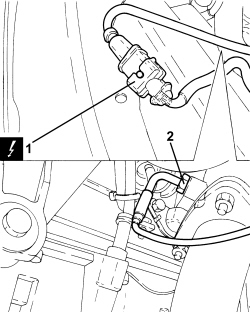

1080B64 CATALYTIC CONVERTER EXCESS TEMPERATURE THERMOCOUPLE - R + R
- Path
- Procedures > 10 ENGINE > 1080 EMISSION CONTROL SYSTEM > 1080B EXHAUST EMISSION CONTROL SYSTEM > 1080B64 CATALYTIC CONVERTER EXCESS TEMPERATURE THERMOCOUPLE - R + R
- Kind
- repair procedure (removal / refitting; the operation number is the code)
- Applies to
- engines: 1.9 JTD 8V, 1.9 JTD 16V, 2.4 JTD 20V; all production periods
- Interactive page
- https://sloeber94.github.io/elrnDB/#/939010622
Applies to: engines: 1.9 JTD 8V, 1.9 JTD 16V, 2.4 JTD 20V; all production periods
 Removing
Removing
 Refitting
Refitting- Position the vehicle on a lift.
- Make sure that the ignition key is in the OFF position, then disconnect the battery terminal (-).
Description | Connector | |
|---|---|---|
- | Battery |
1. Disconnect the electrical connection of the catalytic converter excessive temperature signal thermocouple.
Description | Connector | |
|---|---|---|
1 | Upstream particulate filter temperature sensor (DPF) | See K189 UPSTREAM PARTICULATE FILTER TEMPERATURE SENSOR (DPF) |
Op. 7055B54 UNDER ENGINE PROTECTION/GUARD - R.R.
2. Unscrew and remove the catalytic converter excessive temperature signal thermocouple.

Applies to: engines: 1.9 JTD 8V, 1.9 JTD 16V, 2.4 JTD 20V; all production periods
Refitting
Removing- Position the catalytic converter excessive temperature signal thermocouple in its housing and tighten it to the recommended torque.
Component | Fastening | dia | Value (daNm) | Validity |
|---|---|---|---|---|
Thermal coupling signalling catalytic converter overheating | - | M14 | (catalytic converter side) 4.5 | 1.9 JTD 8V 1.9 JTD 16V 2.4 JTD 20V |
Op. 7055B54 UNDER ENGINE PROTECTION/GUARD - R.R.
- Connect the electrical connection of the catalytic converter excessive temperature signal thermocouple.
- Connect the negative battery terminal.
- Remove the vehicle from the lift.
Topics linked from this page (3)
- 7055B54 UNDER ENGINE PROTECTION/GUARD - R.R.
- A001 BATTERY
- K189 UPSTREAM PARTICULATE FILTER TEMPERATURE SENSOR (DPF)